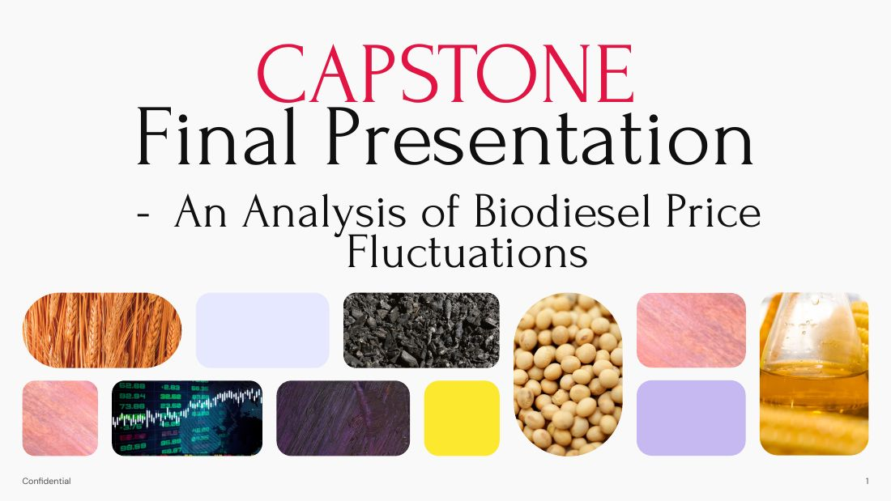

Shipping operations professional turned data analyst. I build analytical tools that bridge domain expertise with data-driven decision making — from commodity price forecasting to voyage economics.
With 1.5 years in dry bulk commercial shipping at Torvald Klaveness, I managed charter party negotiations, bunker procurement strategy, and voyage P&L analysis across global trade routes.
I've since completed a Data Analytics Bootcamp at General Assembly, building fluency in Python, SQL, Tableau, and Power BI. My capstone — a biodiesel price forecasting model — reflects my interest in applying machine learning to commodity markets.
I hold a Bachelor of Business Management from SMU (Operations Analytics major) with a Lean Six Sigma Green Belt, combining quantitative rigour with operational intuition.

End-to-end commodity price forecasting model using historical price data, supply-demand indicators, and macroeconomic variables. Compared ARIMA, Random Forest, and XGBoost to identify the best-performing approach for biodiesel price prediction.
Exploratory data analysis of historical US presidential election data, uncovering voter turnout patterns, demographic shifts, and state-level trends through statistical analysis and interactive visualisations.